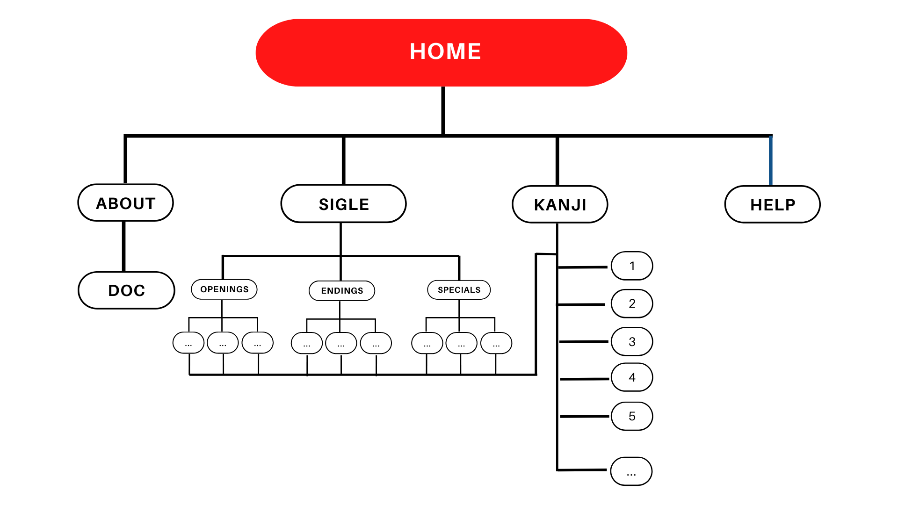

PROJECT MANAGEMENT PLAN E COMMUNICATION STRATEGY
Abstract
Utaria è un sito italiano per apprendere la lingua giapponese grazie alle sigle di anime.
Fornendo non solo video, musica e traduzioni dei testi delle canzoni ma selezionando singolarmente i kanji richiesti dalla certificazione di lingua giapponese più semplice (JLPT N5), il sito vuole aiutare tutti coloro che desiderano imparare il giapponese divertendosi.
Metticela tutta nello studio: Utaria ti copre le spalle!
Project Management Plan
Benchmarking
L’obiettivo del sito è rendere più facile imparare una lingua notoriamente difficile, il giapponese, attraverso le sigle degli anime, in Giappone composte da musicisti e band di successo anche al di fuori del settore dell’animazione – spesso si tratta di brani musicali fruiti anche dai madrelingua come vere e proprie canzoni. Il target utente primario sono giovani che desiderano studiare lingua e kanji giapponesi e che preferiscono farlo in un contesto informale e di divertimento. Possibili competitors possono essere altre risorse online per apprendere il giapponese o siti che forniscono traduzioni di sigle su cui gli autodidatti potrebbero cercare di apprendere da soli.
Struttura e layout
Architettura del sito
Wireframe
Look and Feel – scelte grafiche rilevanti
I font usati sono Acme, Noto Sans JP, Noto Sans: il primo, pur essendo un sans-serif, somiglia vagamente a una pennellata (strumento con cui i giapponesi antichi scrivevano); Noto Sans JP permette di visualizzare correttamente i kanji – purtroppo non permette la corretta visualizzazione di alcuni caratteri, come la “ù”: per questo è stato usato anche Noto Sans, scelto per coerenza.
La palette dei colori segue la bandiera giapponese, bianca e rossa, e il nero viene usato per il suo contrasto e la sua leggibilità (necessaria soprattutto per i kanji, spesso diversi anche solo per poche linee).
Il sito punta ad essere facilmente fruibile, e per questo si è puntato ad avere poche frasi chiare e centrate nella pagina, e un menù fisso in alto; nelle traduzioni, a ogni linea di testo giapponese corrisponde la sua traduzione in italiano immediatamente a destra.
Linguaggi e strumenti
Linguaggi: HTML, CSS, JAVASCRIPT (per Google Analytics), senza usare un template preesistente.
Fontawesome: icone social
GitHub: servizio di hosting (licenza: Creative Commons Zero v1.0 Universal)
W3Schools e Stack Overflow: preziosi consigli e indicazioni
Canva: grafiche, figure e schemi e creazione del logo
Immagini:
Unsplash: immagini a tema Giappone e anime/manga (le ufficiali sono protette da copyright e per questo non è stato possibile utilizzarle).
Home: Photo by Matt Popovich on Unsplash
About: Photo by Tom Vining on Unsplash
Sigle: Photo by Dex Ezekiel on Unsplash
Kanji: Photo by Susann Schuster on Unsplash
Help: Photo by Afif Kusuma on Unsplash
Irasutoya: sito gestito da un disegnatore giapponese, permette l’utilizzo gratuito di immagini (fino a 20, per progetti sia pubblici che a pagamento) ed è largamente usato in Giappone per la possibilità di avere figure disegnate in modo semplice e nello stesso stile.
Video: i video provengono da diversi canali Youtube ufficiali, in particolare Crunchyroll, società di distribuzione e streamer di anime autorizzato e legale.
Dizionari consigliati: Reverso, Glosbe, Jisho (in lingua inglese)
JLPT: sito ufficiale dell'esame (in inglese)
Communication Strategy
Background
Il nome UTARIA deriva dal mix tra uta (“canzone” in giapponese) e “Itaria” (la pronuncia giapponese del nome del nostro paese). Il sito cerca di unire le migliori caratteristiche dei competitor, offrendo analisi e contesto per i kanji, e accompagnando il testo della sigla con la traduzione in italiano e musica/video. Punto di forza è essere in lingua italiana e di permettere l’apprendimento con un metodo alternativo alla semplice memorizzazione passiva, avvicinando possibili utenti per la sua semplicità e servizi e fornendo qualcosa in più delle semplici traduzioni di testi. La possibilità di imparare i kanji e la lingua in un vero contesto d’uso come una canzone per madrelingua e divertendosi grazie alla musica renderà più facile lo studio. Le risorse in italiano sono spesso più scarse rispetto alle inglesi sia come traduzioni che per l’apprendimento: Utaria spera, coniugando i due servizi, di rendere più interessanti e fruibili sia l’uno che l’altro.
Obiettivi comunicativi
L’obiettivo è permettere a più persone possibile di imparare la lingua giapponese in modo facile e divertente, ricordando che leggere e imparare a memoria non sono gli unici modi di studiare una lingua. Per questo l’obiettivo concreto è raggiungere molti utenti e creare engagement con loro, in particolare raggiungendo 20 likes e 100 followers su Instagram e 50 visualizzazioni del sito da utenti diversi.
Target audience e messaggio
Il gruppo demografico da raggiungere sono coloro che possono avere un interesse ad apprendere la lingua giapponese per passione verso il paese o gli anime in particolare. Per raggiungerli, attraverso i social vengono seguiti i profili di appassionati di anime, manga e Giappone. Target secondario sono coloro che cercano semplicemente le traduzioni delle sigle, o coloro che già conoscono il giapponese e possono comunque fornire aiuti e consigli preziosi. Possibili barriere potrebbero essere la presunta insuperabile difficoltà della lingua giapponese o lo stereotipo che per imparare sono necessari metodi più tradizionali.
Promozione
La promozione è avvenuta principalmente sui social, creando profili su Twitter, Instagram, Facebook e Tumblr. In particolare, la promozione ci si è concentrati sui primi due. Su Instagram sono pubblicate storie e post sulle attività del sito. Inoltre, sono pubblicati post per permettere l’apprendimento di kanji aggiuntivi. Twitter è usato per aggiornamenti regolari in tempo reale sull’aggiunta di sigle (con link diretti ai video YouTube degli specials per permettere di scoprire i canali ufficiali dell’artista). Facebook, con contenuti simili a Instagram, punta a quella fascia di popolazione non raggiungibile dai social precedenti. Tumblr, infine, ospita il blog di Utaria: è stato selezionato per la possibilità di rebloggare immagini e fan art degli anime di cui si pubblica. Lì sono anche pubblicate le traduzioni in italiano per orientarsi e fornire un'anteprima.
Valutazione dei risultati
Utaria ha seguito centinaia di profili selezionati come proprio target (in base ai contenuti pubblicati e gli interessi espressi nelle bio e nelle pagine seguite) sui social, ottenendo più di 50 visite alla pagina, 100 followers su Instagram e diversi likes nella sua prima settimana: in questo modo l’obiettivo di raggiungere più persone possibili è stato raggiunto.